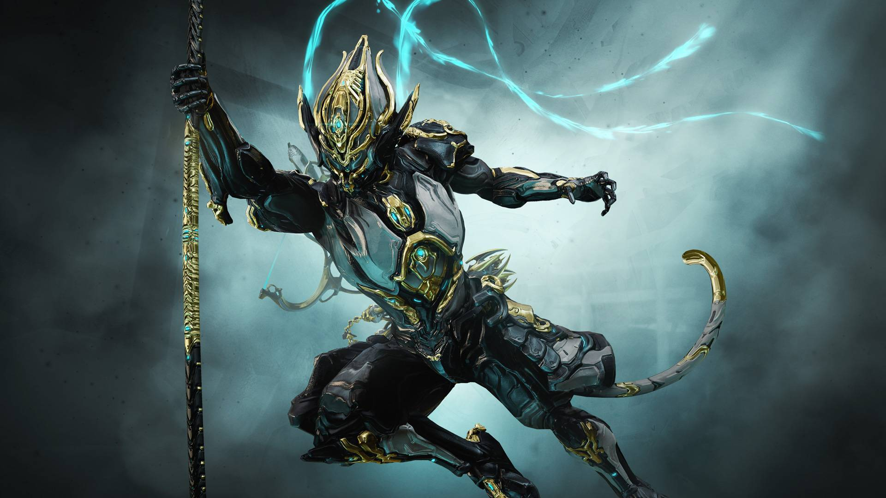
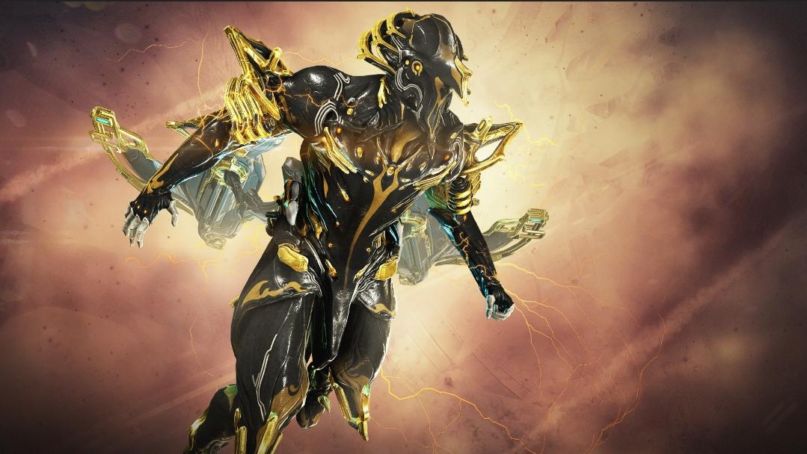
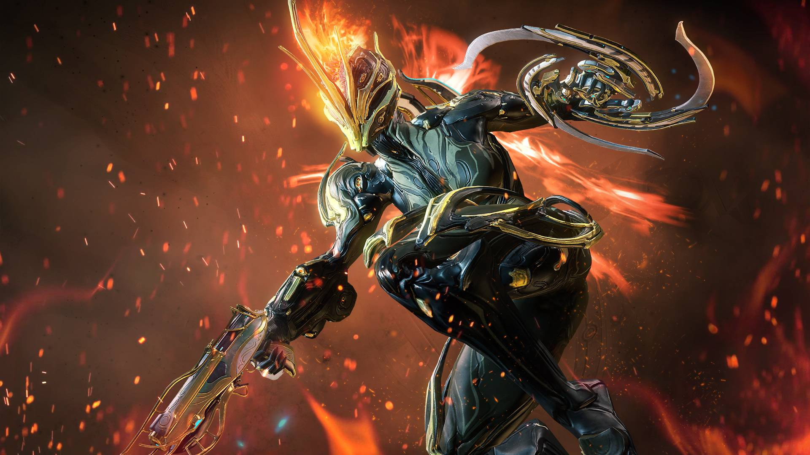

Lista del Top 3 de Warframes
-
Wukong Prime
Es un Warframe que se caracteriza por su primera habilidad, la cual le permite generar un clon de sí mismo, pero usando un arma contraria a la que estés usando en ese momento. Su capacidad para soportar daño y curarse lo vuelven uno de los Warframes más versátiles, en mi opinión. Además, cuenta con un arma única, la cual obtiene temporalmente con su cuarta habilidad. Esta arma es un bastón que tiene un gran alcance, aunque, en mi experiencia, es mejor usar tus propias armas.

-
Volt prime
Es un Warframe que se caracteriza por su segunda habilidad, debido a que esta le da un buff increíble de velocidad de movimiento. Además, su capacidad para controlar a las masas de enemigos con su cuarta habilidad le da un amplio soporte, aunque esta no genere tanto daño. En mi opinión, es un Warframe divertido de usar.

-
Ember prime
Este Warframe se caracteriza por el DPS que puede hacer debido a su cuarta habilidad, la cual lanza meteoritos a los enemigos y los envuelve en fuego. Además, su segunda habilidad cumple dos funciones. La primera es que, mientras más cargada esté, más daño podrá reducir, pero consumirá más energía. La segunda es que, al usar la tercera habilidad, utiliza parte de la carga de esta para reducir la armadura de los enemigos y hacer que sea más fácil acabar con ellos. Es uno de los Warframes que puede dejar de lado todas tus armas si así lo deseas.
